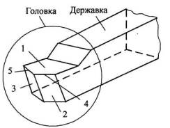
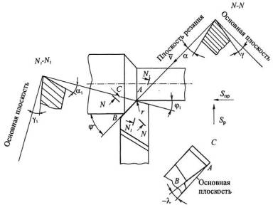

Из всех видов токарных резцов наиболее распространенными являются проходные резцы. Они предназначены для точения наружных поверхностей, подрезки торцов, уступов и т.д.
Призматическое тело npoходного резца, как и любого другого, состоит из режущей части (головки) и державки. Головка резца содержит переднюю 1, главную заднюю 2 и вспомогательную заднюю 3 поверхности. Пересечения этих поверхностей образуют главную 4 и вспомогательную 5 режущие кромки.
По передней поверхности сходит снимаемая резцом стружка. Главная задняя поверхность обращена к поверхности резания, образуемой главной режущей кромкой, а вспомогательная задняя поверхность – к обработанной поверхности детали.
Указанные поверхности и режущие кромки после заточки располагаются под определенными углами относительно двух координатных плоскостей и направления подачи, выбираемыми с учетом кинематики станка.
За координатные плоскости принимают две взаимно перпендикулярные плоскости:
1) плоскость резания, проходящую через главную режущую кромку, и вектор скорости резания, касательный к поверхности резания;
2) основную плоскость, проходящую через эту же кромку и нормаль к вектору скорости резания.
Есть другое определение основной плоскости: это плоскость, проходящая через векторы продольной Sпр и радиальной Sр подач; в частном случае может совпадать с основанием резца, и в этом случае возможно измерение углов резца вне станка в его статическом положении.
За вектор скорости резания, применительно к резцам, а также ко многим другим инструментам, принимают вектор окружной скорости детали без учета вектора продольной подачи, который во много раз меньше вектора окружной скорости и не оказывает заметного влияния на величину передних и задних углов. Только в отдельных случаях, применительно, например, к сверлам, в точках режущих кромок, прилегающих к оси сверла, это влияние становится существенным.
На рисунке представлены вид заготовки и резца в плане и геометрические параметры, обязательно указываемые на рабочих чертежах резцов: γ, α, α1, φ, φ1. Ниже даны определения и рекомендации по назначению их величин.
Передний и задний углы главной режущей кромки принято измерять в главной секущей плоскости N–N, проходящей нормально к проекции этой кромки на основную плоскость, которая в данном случае совпадает с плоскостью чертежа. Плоскость N–N выбрана в связи с тем, что именно в ней происходит деформация металла при резании.
Передний угол γ – это угол между основной плоскостью и плоскостью, касательной к передней поверхности. Величина этого угла оказывает на процесс резания определяющее влияние, так как от него зависят степень деформации металла при переходе в стружку, силовая и тепловая нагрузки на режущий клин, прочность клина и условия отвода тепла из зоны резания. Оптимальное значение переднего угла γ определяется опытным путем в зависимости от физико-механических свойств обрабатываемого и режущего материалов, факторов режима резания (V, S, t) и других условий обработки. Возможные значения угла γ находятся в пределах 0...30°. Для упрочнения режущего клина, особенно изготовленного из хрупких режущих материалов, на передней поверхности затачивают фаску с нулевым или отрицательным передним углом (γф = 0...–5°), шириной f, зависящей от подачи.
Задний угол α – это угол между плоскостью резания и плоскостью, касательной к задней поверхности. Фактически это угол зазора, препятствующего трению задней поверхности резца о поверхность резания. Он влияет на интенсивность износа резца и в сочетании с углом γ влияет на прочность режущего клина и условия отвода тепла из зоны резания.
Чем меньшую нагрузку испытывает режущий клин и чем он прочнее, тем больше значение угла a, величина которого зависит, таким образом, от сочетания свойств обрабатываемого и режущего материалов, от величины подачи и других условий резания. Например, для резцов из быстрорежущей стали при черновой обработке конструкционных сталей α = 6...8°, для чистовых операций α = 10...12°.
Угол наклона главной режущей кромки λ – это угол между основной плоскостью, проведенной через вершину резца, и режущей кромкой. Он измеряется в плоскости резания и служит для предохранения вершины резца А от выкрашивания, особенно при ударной нагрузке, а также для изменения направления сходящей стружки. Угол λ считается положительным, когда вершина резца занижена по сравнению с другими точками главной режущей кромки и в контакт с заготовкой включается последней. Стружка при этом сходит в направлении обработанной поверхности (от точки В к точке А), что может существенно повысить ее шероховатость. При черновой обработке это допустимо, так как после нее следует чистовая операция, снимающая эти неровности. Но при чистовых операциях, когда нагрузка на режущий клин невелика, первостепенное значение приобретает задача отвода стружки от обработанной поверхности. С этой целью назначают отрицательные значения угла (–λ). При этом вершина резца А является наивысшей точкой режущей кромки, а стружка сходит в направлении от точки А к точке В.
Наличие угла λ усложняет заточку резцов, поэтому практические значения этого угла невелики и находятся в пределах λ = +5…–5°.
Углы в плане φ и φ1 (главный и вспомогательный) – это углы между направлением продольной подачи Sпр и, соответственно, проекциями главной и вспомогательной режущих кромок на основную плоскость.
Главный угол в плане φ определяет соотношение между толщиной и шириной срезаемого слоя. При уменьшении угла φ стружка становится тоньше, улучшаются условия теплоотвода и тем самым повышается стойкость резца, но при этом возрастает радиальная составляющая силы резания.
При обточке длинных заготовок малого диаметра вышесказанное может привести к их деформации и вибрациям, и в этом случае принимается φ = 90°.
У проходных резцов обычно угол φ1 = 10...15°. С уменьшением угла γ1 до 0 величина h также уменьшается до 0, что позволяет значительно увеличить подачу, а следовательно, и производительность процесса резания.
Вспомогательный задний угол α1, измеряемый в сечении N1 – N1, перпендикулярном к вспомогательной режущей кромке, принимается примерно равным α; α1 образует зазор между вспомогательной задней поверхностью и обработанной поверхностью заготовки.
Вспомогательный передний угол γ1 определяется заточкой передней поверхности и на чертеже обычно не указывается.
С целью повышения прочности режущей части резца предусматривается также радиус скругления его вершины в плане: r = 0,1...3,0 мм. При этом большее значение радиуса применяется при обработке жестких заготовок, так как с увеличением этого радиуса возрастает радиальная составляющая силы резания.